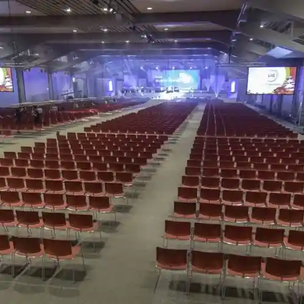

Osaka
Osaka · Osaka
Osaka
Highlighted on the Osaka map.
Sights
@ Ho Mu Kafe Osaka Main Shop
ALLYS Umeda (Ariizu)
ATC Horu

Amazing Kart ISK Osaka Maishima Mise
Asue Ariina Osaka (Osaka Chuo Gym)
Asue Osaka Puru
BLANZ Shinsaibashi
DOTON PLAZA
EST (Esuto)
GLION MUSEUM
Gardener's Tenshiba i:na Mise
HACOSTADIUM (Hakosutajiamu) Osaka
HEP FIVE
HEP FIVE Kanransha
HERBIS PLAZA/PLAZA ENT
Hoop (Fupu)
JO-TERRACE OSAKA
JUMP SHOP Osaka Shinsaibashi Mise
Joshin SUPER KIDS LAND Main Shop
Joshin Supakizzu Land Main Shop
KPG RIVER CRUISE Osaka Yakatabune
LUCUA osaka (Rukua Osaka)
NAMBA Nannan
NELU Korai Hashi
NU Chaya Town / NU Chaya Town Purasu
NinjaDo (Ninja Do)
OAP (Osaka Amenitei Park)
OBP (Osaka Bijinesu Park)
OCAT (Osaka Shiteieataminaru)
OMM (Osaka Machandaizu Mato)
OMO7 Osaka by Hoshino Resort
PICOZO (Sado Calligraphy Cocoon flower)
PINK KAWAII Kafe
Pivot BASE Travel Café @ Tonbori
ROAD BIKE RENTAL JAPAN
SAMURAININJA
SPACE9 (Supesunain)
Sushi Making Experience Namba
TAIKO-LAB Umekita
TAKOPA (TAKOYAKI PARK)
TKTS Namba Tourist Information
TMT OSAKA
TOHO Shinemazu Namba
TUGBOAT_TAISHO (Taguboto Taisho)
The Kitahama PLAZA
WILLER Basutaminaru Osaka Umeda
Washoku Home Cooking - Machiko
W Osaka
Zepp Namba (Zeppunamba)
and (Ando)
bern (Berun)
hu+gMUSEUM (Hagu Museum)
namBa HIPS (Nambahippusu)
Aioi Nissei Dowa Sonpo Za · Fenikkusuhoru
Ajibiru Minami Mise
Abe no Kyuzumoru
Abe no Rushiasu
Amida Ike Daikoku
Umeda Kokusai Kurinikku
Ean Osaka Tsurisutoinfomeshonkafe
Okini Ariina Maishima
Gamoyon Kaiwai (Gamo Shitei Me)
Ganko Heiya Sato Residence
Kimo no Rentaru wargo Osaka Shinsaibashi Mise
Kin'ei Aporobiru
Kurashi no Museum (Ganko Heiya Sato Residence)
Sakishima Kosumotawa Lookout
Suki Yaki Kita Mura
Semba Shinsaibashi Suji Shopping Street
Sembiru (Semba Center Biru)
Tombori Ribauoku
Tombori Ribakuruzu
Naniwa no Wadaiko Workshop (Taiko Sei)
Naniwa Meibutsu Ichibiri Iori Dotombori Mise
Namba CITY
Namba Hatch (Namba Hatchi)
Namba Uoku
Namba Gu Land Kagetsu
Namba Park Su
Namba Park Sushinema
Namba Marui
Mahobin Memorial Museum
Ajia Taiheiyo Toredo Center (ATC)
Abe no Rakubasu
Amerika Village
Arude Shin Osaka
Irasuto Manga Kyoshitsu egaco Osaka Ko
Intekkusu Osaka
Edion'ariina Osaka (Osaka Furitsu Taiiku Hall)
Kanpuri Minami Shinsaibashi Mise
Gasubiru Shokudo
Kizzu Plaza Osaka
Kyaputen Line
Kirara Kyujo Shopping Street
Kirin Do Yakkyoku Habisu Osaka 4 Kai
Kurisuta Nagahori
Guddosumairu × Animeitokafe Osaka Nihombashi
Guranfuronto Osaka
Guranfuronto Osaka Shoppu & Resutoran
Kokumindoraggu Shinsaibashi Suji 1 Chome Mise
Kosumosukuea
Za Garden Orientaru Osaka
Za Shinfoniihoru
Jiburi Gaippai Donguri Kyowakoku Namba Mise
Janguru Osaka Nihombashi Mise
Janjan Alley (Nanyo Tori Shopping Street)
Suiitsuparadaisu Umeda Mise
Supotaka Shinsaibashi Biggusuteppu Main Shop
Sutsu Ga Su Shuri O Shin Osaka Mise
Taimuautomagatto Osaka
Diamoru Osaka
Doriimutekondosukuru
Don Kihote Dotombori Mise Tourist Information
Don Kihote Dotombori Midosuji Mise Tourist Information
Dojima Chika Center
Narejjikyapitaru
Hiruton Plaza Iisuto / Uesuto
Bijuopera Shinsaibashi Suteyudio
Bikkukamera Namba Mise
Birubodoraibu Osaka (Billboard Live OSAKA)
Piisu Osaka (Osaka Kokusaiheiwa Center)
Festival Horu
Bu Land Shoppusutoriito
Howaitei Umeda
Botoresu Suminoe
Mizu no Supotorojiigyararii
Miraiza Osaka Shiro
Yamada Denki LABI1 Namba
Yanmasutajiamu Nagai
Yunibasaru Sutajio Japan
Yodobashi Umeda Tawa
Rego Land ® Disukabarii Center Osaka
Isshin Tera Shiata Gu Raku
Ippan Shadanhojin Nippon Satsujin Michi Kyokai
Mandai Ike Park
Sanko Shrine
Mikuni Joryu Tokoro
Mitsu Tera
Joho Ukiyoe Kan
Joho Onsen Ikkyu
Naka Yuki Shima
Naka Yuki Shima LOVE CENTRAL
Naka Yuki Shima Festival Tawa / Naka Yuki Shima Festival Tawa Uesuto
Naka Yuki Shima Park
Chugokuryori Kinpuku Rai
Chuza Kuidaore Biru
Kyuhoji Hashi
Kyosera Domu Osaka
Kyobashi Komuzu Garden
Imamiya Ju Shrine
Imahashi
Denpo Yama Sainen Tera
Sumitomo Seimei Izumi Horu
Sumiyoshi Park
Sumiyoshi Taisha
Shinano Hashi
Ganso Teppanyaki Suteki Miso no Osaka Mise
Zen Kyo Tera (Senkoji)
Hachiken Ie Hama Funatsukiba
Enju Iori (Kama Hachiman)
Sosaku Wagashi Workshop Basho Iori Tenpozan Mise
Yushin Kan Nihonto Tameshi Kiri Experience
Kita Mido (Honganji Tsu Village Betsuin)
Kitashinchi
Kitahama Retorobirujingu
Sennichimae Doguya Suji Shopping Street
Sembayashi Shopping Street
Minamihorie Kita Horie Kaiwai
Minamisemba
Kuchi Nawa Saka
Kawai Deko Maki Sushi Experience
Kichijoji
Ware Hikosan Taisei Kan'onji
Suo Town Tori (Yoroppa Tori)
Saku Yako no Hana Kan
Shitenno Tera
Shitenno Tera Koshin Do
Kokubunji
National Kokusai Art Museum
National Bunraku Gekijo
Za Ma Shrine
Johoku Park
Johoku Shobuen
Horikawa Ju Shrine
Horikoshi Shrine
Do Shima Abanza
Do Shima Kurosuoku
Zofuku Tera
Daimaru Shinsaibashi Mise
Dai Tora Kamaboko Ebisubashi Suji Main Shop
Dainen Butsuji
Otsuki Nogakudo
Oe Hashi
Taishu Engeki (Gofuku Za)
Daiki Suisan Kaitenzushi Dotombori Mise
Osaka Kurashi no Konjaku Kan
Osaka Boteju Main Shop
Osaka Wakuwaku Akademii
Osaka Katedoraru Hijiri Maria Daiseido
Osaka Shitei Shinyokinko Sutajiamu
Osaka Suteshonshitei
Osaka Dakku Tour
Osaka Puruaisusu Ga to Ba
Osaka Herikoputa Yuran (Ogawa Koku)
Osaka Naka Yuki Shima Art Museum
Osaka Kigyo Ie Museum
Osaka Kurabu
Osaka Torihikijo
Osaka Shiki Gekijo
Osaka Kokusaikoryu Center (Aihausu)
Osaka Shiro Horu
Osaka Shiro Park
Osaka Shiro Tenshukaku
Osaka Shiro Gyoza Fune
Osaka Josai no Maru Garden
Osaka Shiro Ongakudo
Osaka Tenmangu Shrine
Osaka Gesuido Science Museum
Osaka Chuo Public Hall
Osaka Ritto Hiroshi Toji Art Museum
Osaka Ritsu Science Museum
Osaka Ritsu Art Museum
Osaka Ritsu Shizen Shi Museum
Osaka Ritsu Nagai Botanical Garden
Osaka Ritsu Abeno Bosai Center (Abe no Tasukaru)
Osaka Koiki Kankyo Shisetsu Kumiai Maishima Kojo
Osaka Furitsu Joho Engei Museum (Wahha Joho)
Osaka Furitsu Naka Yuki Shima Library
Osaka Bunka Kan Tenpozan
Osaka Shin Kabukiza
Osaka Kizu Oroshiuri Market
Osaka Shochiku Za
Osaka History Museum
Osaka Suijo Basu Akuaraina
Osaka Minato Hansen Kata Kankosen Santamaria
Osaka Minato Hansen Kata Kankosen Santamaria Towairaitokuruzu
Osaka Kagakugijutsukan
Osaka Kanko Boranteiagaido Kyokai
Osaka Tourist Information
Osaka Takashima Ya
Osaka Tsuruhashi Market
Tenpozan Hababirejji
Tenpozan Magattopuresu
Tenpozan Park
Tenpozan Taikan Ran Kuruma
Tenma Tenjin Hanjo Tei
Tennoji Shichi Saka
Tennoji Koen Entoransueria (Tenshiba)
Tennoji Zoo
Tenjin Saka
Tenjimbashi
Tenjimbashi Suji Shopping Street
Tenjimbashi Suji Shopping Street (1 3 Chome)
Taihei Tera
Taiyuji
Himejima Shrine
Abe Seimei Shrine
Ankyo Shrine
Soemon Town
Hoshu In
Jakko Tera (Eguchi no Kun Do)
Teranishi Ie Abeno Nagaya
Ogura Ya / Wogura Kombu
Sukunabikona Shrine
Hakimono Tonyagai (Hakihaki Taun)
Yamamoto Nogakudo
Kawaguchi Kirisutokyo Kai
Kawasaki Hashi
Kawabata Yasunari Bungaku Hi
Tsuneyasu Hashi
Shiawase no Fukurokafe chouette
Kaiten Sushi CHOJIRO
Iyasaka Shrine
Midosuji Chokoku Sutoriito
Miyuki Tori (Koriataun)
Mito Park
Mito Miya (Mito Hachiman Shrine)
Goryo Shrine
Shinsaibashi Mitsuya Shinsaibashi Main Shop
Shinsaibashi Suji Shopping Street
Shingan Tera
Ninja Yashiki Experience (Ninja Torikkuhausu)
Shiki Chokichi Shrine
Aizen Do Shoman In (Aizen San)
Keitaku Sono
O Ten In (Shiatorikaru O Ten In)
Ebisubashi Suji Shopping Street
Ogi Town Park
Kobushi Shinkai
Shinsekai
Shin Osaka Tourist Information
Shin Umeda Shitei Sogo Information Center
Hiyoshi Shrine
Nihonkirisutokyodan Naniwa Kyokai
Nippon Kogei Kan
Nihombashi
Nihombashi Denden Taun
Nihombashi Sogo Information Center
Nipponginko Osaka Branch Kyukan
Kyu Konishi Ie Jutaku Shiryo Kan
Kyu Sakuranomiya Public Hall
Kyu Kuroda Han Kurayashiki Nagaya Mon
Meijiya Biru
Meiji Hashi (Kinenhi)
Sonezaki O Hatsu Tenjin Tori Shopping Street
Asahi Gekijo
Hon Town Hashi
Kumata Shrine
Matsushita IMP Biru
Matsuya Town Suji Shopping Street
Matsusaka Ushi Yakiniku M Hozen Tera Yokocho Mise
Sendan Mokkyo (Sendan no Kibashi)
Ume Sendo
Umeda BIGMAN
Umeda Sukaibiru Kuchu Teien Lookout
Umeda Gofuku Za
Umeda Geijutsugekijo Shiata Doramashitei
Umeda Geijutsugekijo Meinhoru
Mori to Riru no BBQ Fiirudo
Mori no Miya Piroteihoru
Morino Sanpuru
Sei Hasu Tera
Kema Sakura Yuki Miya Park
Kema Komon
Mizu Taki Ryotei Hakata Hana Aji Tori Shinsaibashi Mise
Suisho Hashi
Ezaki Memorial Museum
Izumi Nuno Kan
Hozen Tera Alley
Hoan Tera
Horaku Tera
Tsunami · Takashio Suteshon
Kaiyo Do Figyua Museum Miraiza Osaka Shiro
Kaiyukan
Yodoyabashi
Yodoyabashi odona
Yodoyabashi Kanko Suteshon
Yodogawa River Park
Yodogawa Shrine
Minato Town Ribapureisu
Yuki Art Museum
Takimi Koji
Yakiniku Rohen
Katayama Shashinkan
Tamatsukuri Inari Shrine
Shogoku Tamashii Shrine
Nama Ne Shrine
Ikoma Birujingu
Tanabe Mitsubishisei Kusuri Shiryo Kan
Shinshu Otani Ha Namba Betsuin (Minami Mido)
Sanada Sachi Village Zo
Karabori Shopping Street
Karabori Kaiwai
Sora Niwa Onsen OSAKA BAY TOWER
Tachibana Tori (Orenjisutoriito)
Kinutani Koji Tenku Art Museum
Mengyo Hall
Midori Hashi
Oimatsu Tori
Higobashi
Mai Kon no Kohara
Maishima Kurafuto Kan
Maishima Shiisaidopuromunado
Maishima Supotsuai Land
Maishima Shin Yuhigaoka
Semba Birudingu
Shibakawa Biru
Basho no Kuhi (Sumiyoshi Park)
Basho Do Warai Rai Bi Mochi (Warabimochi)
Hana no I Hashi
Hanahaku Memorial Park Tsurumi Ryokuchi
Chaya Town Kaiwai
Chausuyama (Tennoji Park)
Sado Experience The Osaka
Manpukuji
Kabura So Iori (Busoan)
Fujita Art Museum
Toyokuni Shrine
Kintetsu Ato Kan
Kintetsu Hyakkaten Abe no Harukasu Kintetsu Main Shop
Kintetsu Hyakkaten Abe no Harukasu Kintetsu Main Shop Foreign Customer's Salon
Kintetsu Hyakkaten Uemoto Town Mise
Tsutenkaku
Tsutenkaku Hondori Shopping Street
Zohei Museum
Zoheikyoku (Kojokengaku)
Dotombori
Dotombori Konamon Museum
Dotombori Biiru Kojo (Dotombori Biiru Jozo)
Tekijuku
Nozato Sumiyoshi Shrine
Kanehisa Uemon Dotombori Mise
Hokoryu Hashi
Ginzan Tera
Nishiki Hashi (Nishikibashi)
Nagahori Hashi (Nagahori Hashi Ato)
Nagai Park
Hankai Denki Kido (Chinchin Densha)
Hankyu Umeda Main Shop
Hankyu Tsurisuto Center Osaka Umeda
Hankyu Menzu Osaka (HEP Nabio)
Hankyu Sambangai
Hankyu Higashidori Shopping Street
Hanshin Umeda Main Shop
Abe Oji Shrine
Abeno Shrine
Namba Yasaka Shrine
Namba Kyuseki Park
Namba Hashi (Raion Hashi)
Namba Shrine
Namba Tourist Information
Roten Shrine (O Hatsu Tenjin)
Jin Park
Shokuhin Sanpuru Tsukuri Experience
Shokuhin Sanpuru Senmonten Dezainpogatto Main Shop
Takatsu Miya (Takatsu Shrine)
Korai Hashi
Sakana Tsuri Sono Gogan (Osaka Nanko Sakana Tsuri Sono)
Tsurumi Ryokuchi Puru
Kuromon Market
Rei En Tera